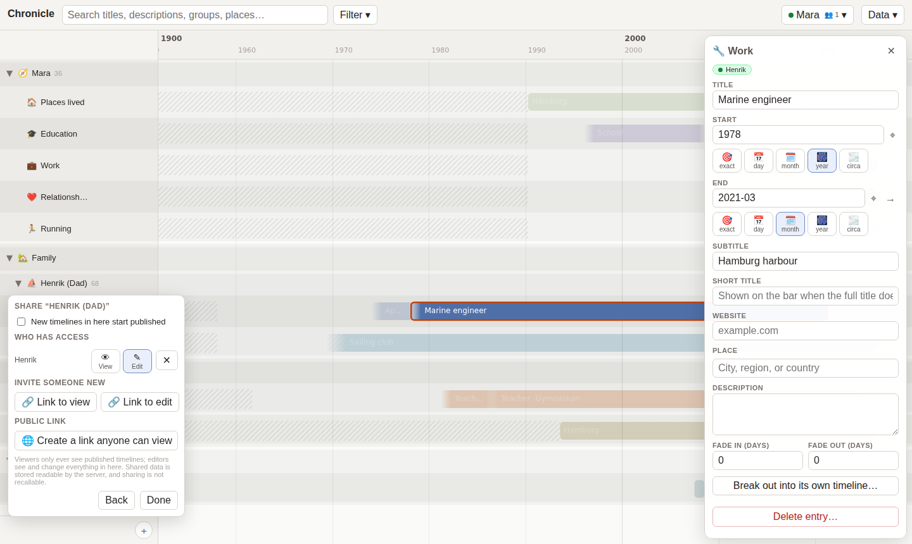

Everything side by side
One row per part of your life — homes, school, jobs, relationships, a hobby — and one group per person. Put your parents’ lives next to yours and see who was where when you were born, or what your dad was doing at your age.
- Pan and zoom from a century down to a day
- Groups nest as deep as your family does, and fold away into one row
- Ages computed from birth dates; the years before someone was born are shaded
- A mini-map, search, filters, and hiding what you don’t need right now
